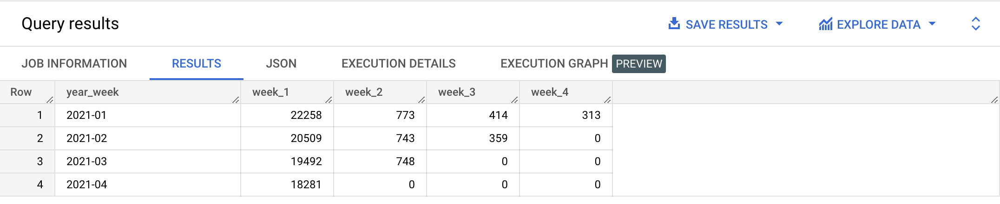

FIRST_VALUE is used to display a column value from the first row in a window. It takes as parameter the column we want to display.
Example
SELECT country,
FIRST_VALUE(CONCAT(first_name, ' ', last_name)) OVER(PARTITION BY country ORDER BY created_at ASC) AS first_user,
FIRST_VALUE(created_at) OVER(PARTITION BY country ORDER BY created_at ASC) AS first_user_signup_date
FROM bigquery-public-data.thelook_ecommerce.users
ORDER BY country ASC;
SELECT DISTINCT country,
FIRST_VALUE(CONCAT(first_name, ' ', last_name)) OVER(PARTITION BY country ORDER BY created_at ASC) AS first_user,
FIRST_VALUE(created_at) OVER(PARTITION BY country ORDER BY created_at ASC) AS first_user_signup_date
FROM bigquery-public-data.thelook_ecommerce.users
ORDER BY country ASC;
Learn more
üëâ Check out the official documentation
{% include practice_problems_intructions.html %}
N°1 — Date of first visit for each Google Analytics user in January 2021
Tables
bigquery-public-data.ga4_obfuscated_sample_ecommerce.events_*
Task
Write a query that will display the date of the first visit for each user. Sort the result by user pseudo id in ascending order.
Example results
Solution
üôà HideüëÄ Show
WITH users_first_event_date AS
( SELECT user_pseudo_id,
FIRST_VALUE(PARSE_DATE('%Y%m%d', event_date)) OVER (PARTITION BY user_pseudo_id ORDER BY event_date) AS first_visit_date
FROM `bigquery-public-data.ga4_obfuscated_sample_ecommerce.events_*`
WHERE _table_suffix BETWEEN '20210101' AND '20210131'
)
SELECT user_pseudo_id,
MIN(first_visit_date) AS first_visit_date
FROM users_first_event_date
GROUP BY user_pseudo_id
ORDER BY user_pseudo_id ASC,
first_visit_date ASC;
N°2 — Exit pages per Google Analytics unique session
Tables
bigquery-public-data.ga4_obfuscated_sample_ecommerce.events_20210104
Task
Write a query that will display the exit page by session on January 4th, 2021.
Example results

Solution
üôà HideüëÄ Show
WITH page_views AS
( SELECT CONCAT(
user_pseudo_id,
'.',
( SELECT value.int_value FROM UNNEST(event_params) WHERE event_name = 'page_view' AND key = 'ga_session_id' )
) AS unique_session_id,
( SELECT value.string_value FROM UNNEST(event_params) WHERE event_name = 'page_view' AND key = 'page_location') AS page,
event_timestamp
FROM bigquery-public-data.ga4_obfuscated_sample_ecommerce.events_20210104
ORDER BY event_timestamp
),
page_views_with_exits AS
( SELECT unique_session_id,
page,
event_timestamp,
FIRST_VALUE(CONCAT(page,event_timestamp)) OVER (PARTITION BY unique_session_id ORDER BY event_timestamp DESC) AS exit_page
FROM page_views
WHERE unique_session_id IS NOT NULL
)
SELECT unique_session_id,
exit_page
FROM page_views_with_exits
GROUP BY unique_session_id,
exit_page
ORDER BY unique_session_id;
N°3 — Top 10 Google Analytics exit pages in January 2021
Tables
bigquery-public-data.ga4_obfuscated_sample_ecommerce.events_*
Task
Write a query that will display the top 10 exit pages in January 2021.
Example results
Solution
üôà HideüëÄ Show
WITH page_views AS
( SELECT CONCAT(
user_pseudo_id,
'.',
( SELECT value.int_value FROM UNNEST(event_params) WHERE event_name = 'page_view' AND key = 'ga_session_id' )
) AS unique_session_id,
( SELECT value.string_value FROM UNNEST(event_params) WHERE event_name = 'page_view' AND key = 'page_location') AS page,
event_timestamp
FROM `bigquery-public-data.ga4_obfuscated_sample_ecommerce.events_*`
WHERE _table_suffix BETWEEN '20210101' AND '20210131'
ORDER BY event_timestamp
),
page_views_with_exits AS
( SELECT unique_session_id,
page,
event_timestamp,
FIRST_VALUE(CONCAT(page)) OVER (PARTITION BY unique_session_id ORDER BY event_timestamp DESC) AS exit_page
FROM page_views
WHERE unique_session_id IS NOT NULL
),
unique_sessions_exit_pages AS
( SELECT unique_session_id,
exit_page
FROM page_views_with_exits
GROUP BY unique_session_id,
exit_page
ORDER BY unique_session_id
)
SELECT exit_page,
COUNT(*) AS unique_sessions
FROM unique_sessions_exit_pages
GROUP BY exit_page
ORDER BY unique_sessions DESC
LIMIT 10;
N°4 — Google Analytics daily user retention in January 2021
Tables
bigquery-public-data.ga4_obfuscated_sample_ecommerce.events_*
Task
- We define as a returning user any users who visit the site once during a given date range and return to the site within the same date range.
- Write a query that will display the user retention percentage per day, in January 2021.
- Sort the results by day number in ascending order.
Notes:
- We consider only active users (for who there was at least one event with the engagement_time_msec event parameter greater than 0.
- You can use the ga_session_number event parameter to determine if the user is new or returning.
Example results

Solution
üôà HideüëÄ Show
WITH user_sessions_info AS
( SELECT user_pseudo_id,
( SELECT value.int_value FROM UNNEST(event_params) WHERE key = 'ga_session_id') AS session_id,
( SELECT value.int_value FROM UNNEST(event_params) WHERE key = 'ga_session_number') AS session_number,
MAX(( SELECT value.int_value FROM UNNEST(event_params) WHERE key = 'engagement_time_msec' )) AS engagement_time_msec,
PARSE_DATE('%Y%m%d',event_date) AS session_date,
FIRST_VALUE(PARSE_DATE('%Y%m%d',event_date)) OVER (PARTITION BY user_pseudo_id ORDER BY event_date) AS first_session_date
FROM `bigquery-public-data.ga4_obfuscated_sample_ecommerce.events_*`
WHERE _table_suffix BETWEEN '20210101' AND '20210131'
GROUP BY user_pseudo_id,
session_id,
session_number,
event_date
ORDER BY user_pseudo_id,
session_id,
session_number
)
SELECT DATE_DIFF(session_date,first_session_date,day) + 1 AS day_number,
COUNT(DISTINCT CASE WHEN session_number = 1 AND engagement_time_msec > 0 THEN user_pseudo_id END) AS new_users,
COUNT(DISTINCT CASE WHEN session_number > 1 AND engagement_time_msec > 0 THEN user_pseudo_id END) AS returning_users,
ROUND((COUNT(
DISTINCT CASE WHEN session_number > 1 AND engagement_time_msec > 0 THEN user_pseudo_id END)
/ MAX(COUNT(DISTINCT CASE WHEN session_number = 1 AND engagement_time_msec > 0 THEN user_pseudo_id END)
) OVER ()) * 100, 2) AS retention_percentage
FROM user_sessions_info
GROUP BY day_number
ORDER BY day_number;
N°5 — Google Analytics weekly user retention
Tables
bigquery-public-data.ga4_obfuscated_sample_ecommerce.events_*
Task
- In the previous problem (Google Analytics daily user retention in January 2021), we built our first retention table. The issue with working with a daily range is that it’s too "micro", too noisy to get a clear picture on what’s happening.
- For this task, we’ll group users in cohorts, where each cohort represents a week’s worth of visits.
- Write a query that will display the user retention numbers per week (the raw numbers, not the percentages), in January 2021.
- Sort the results by week number in ascending order.
Notes:
- We consider only active users (for who there was at least one event with the engagement_time_msec event parameter greater than 0.
- You can use the ga_session_number event parameter to determine if the user is new or returning.
- You should use ISOYEAR instead of YEAR and ISOWEEK instead of WEEK. Learn more on this with the following links: EXTRACT, ISO week date, ISO year.
Example results
Solution
üôà HideüëÄ Show
WITH user_sessions AS
( SELECT user_pseudo_id,
(SELECT value.int_value FROM UNNEST(event_params) WHERE key = 'ga_session_id') AS session_id,
(SELECT value.int_value FROM UNNEST(event_params) WHERE key = 'ga_session_number') AS session_number,
MAX((SELECT value.int_value FROM UNNEST(event_params) WHERE key = 'engagement_time_msec')) AS engagement_time_msec,
PARSE_DATE('%Y%m%d', event_date) AS session_date,
FIRST_VALUE(PARSE_DATE('%Y%m%d', event_date)) over (PARTITION BY user_pseudo_id ORDER BY event_date)
AS first_session_date
FROM `bigquery-public-data.ga4_obfuscated_sample_ecommerce.events_*`
WHERE _table_suffix BETWEEN '20210101' AND '20210131'
GROUP BY user_pseudo_id,
session_id,
session_number,
event_date
ORDER BY user_pseudo_id,
session_id,
session_number
)
SELECT DISTINCT CONCAT(EXTRACT(ISOYEAR FROM first_session_date), '-', format('%02d', EXTRACT(ISOWEEK FROM first_session_date)))
AS year_week,
COUNT(DISTINCT CASE
WHEN DATE_DIFF(session_date, first_session_date, ISOWEEK) = 0
AND session_number >= 1
AND engagement_time_msec > 0
THEN user_pseudo_id
END
) AS week_1,
COUNT(DISTINCT CASE
WHEN DATE_DIFF(session_date, first_session_date, ISOWEEK) = 1
AND session_number > 1
AND engagement_time_msec > 0
THEN user_pseudo_id
END
) AS week_2,
COUNT(DISTINCT CASE
WHEN DATE_DIFF(session_date, first_session_date, ISOWEEK) = 2
AND session_number > 1
AND engagement_time_msec > 0
THEN user_pseudo_id
END
) AS week_3,
COUNT(DISTINCT CASE
WHEN DATE_DIFF(session_date, first_session_date, ISOWEEK) = 3
AND session_number > 1
AND engagement_time_msec > 0
THEN user_pseudo_id
END
) AS week_4
FROM user_sessions
WHERE EXTRACT(ISOYEAR FROM first_session_date) = 2021 AND EXTRACT(MONTH FROM first_session_date) = 1
GROUP BY year_week
ORDER BY year_week ASC;
N°6 — Google Analytics average lifetime revenue per user
Tables
bigquery-public-data.ga4_obfuscated_sample_ecommerce.events_*
Task
- Here, we’ll define the concept of “lifetime value” as the revenue generated by a user during the month of January 2021, but the same approach would hold for any larger time frame.
- Write a query that will display the average lifetime value per user for reach day of January 2021.
Example results

Solution
üôà HideüëÄ Show
WITH revenue_by_session_by_user AS
( SELECT user_pseudo_id,
(SELECT value.int_value FROM UNNEST(event_params) WHERE key = 'ga_session_id') AS session_id,
PARSE_DATE('%Y%m%d', event_date) AS session_date,
FIRST_VALUE(PARSE_DATE('%Y%m%d', event_date)) OVER (PARTITION BY user_pseudo_id ORDER BY event_date) AS first_session_date,
SUM(ecommerce.purchase_revenue) AS revenue
FROM `bigquery-public-data.ga4_obfuscated_sample_ecommerce.events_*`
WHERE _table_suffix BETWEEN '20210101' AND '20210131'
GROUP BY user_pseudo_id,
session_id,
event_date
ORDER BY user_pseudo_id,
session_id
),
revenue_and_users_by_session_day_number AS
( SELECT DATE_DIFF(session_date, first_session_date, DAY) + 1 AS day_number,
COUNT(DISTINCT user_pseudo_id) AS users,
SUM(revenue) AS ltv_revenue_per_day_number,
SUM(revenue) / MAX(COUNT(DISTINCT user_pseudo_id)) OVER () AS avg_ltv_revenue_per_day_number
FROM revenue_by_session_by_user
GROUP BY day_number
ORDER BY day_number
)
SELECT day_number,
ROUND(SUM(avg_ltv_revenue_per_day_number) OVER (ORDER BY day_number), 2) AS average_ltv_revenue
FROM revenue_and_users_by_session_day_number
GROUP BY day_number,
avg_ltv_revenue_per_day_number
ORDER BY day_number ASC;